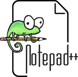

A szerverszobátólavégfelhasználói élményig.
Az üzemeltetésben megtanultam a stabilitás és megbízhatóság árát. Ezt a szemléletet hozom át minden egyes projektemben a fejlesztői munkámban.
- Windows Server
- Linux
- Active Directory
- Angular
- TypeScript
- Python
- ÜzemeltetésKözépszint
- FejlesztésAlapszint
Okay.
ping -t 127.0.0.1
ID HU-0001Gyors elérés
Tudásom
Az üzemeltetői alapok a hardveres és a szoftveres, valamint a fejlesztői eszközökkel párosítva kiegészítik egymást.
Projekjeim
Ahol a tanulás a gyakorlatban is látszik. Mindig is fontosnak tartottam, hogy a saját projetjeimet közzétegyem verziókezelő platformon. Erre a GitHub egy tökéletes megoldás.
Rólam röviden
Simon Krisztián vagyok,
26 éves, zalaegerszegi lakos. Az infromatika iránti érdeklődésem még általános iskolai tanulmányaim során kezdődött mindazzal, hogy emelt szintű informatikai órákra jártam. Egy kis középiskolai kitérő után rájöttem arra, hogy az IT-ben van az én utam. Ennek eredményeképpen az érettségim után 2 évvel beiratkoztam a Zalaegerszegi Szakképzési Centrum Széchenyi István Technikumába az új képzési rendszerben indul Rendszer- és Alkalmazásüzemeltető technikusi szakra 2023 és 2025 között. Az ott elsajított tudás egy remek kiindulási alap volt arra, hogy újra megszeretette velem az informatikát. Az elsajátított tudást szakmai versenyeken is kamatoztattam: 2024 és 2025-ben részt vettem az OITM (Országos Informatikai Tanulmányi Megmérettetésen) több kategóriában. A technikusi első évének végén a budapesti Ruander Oktatási Központban elvégeztem a számítógépszerői tanfolyamot. A szakmai és a személyes fejlődés jegyében szintén a Ruanderben tanulok ezúttal Junior Frontend + Webfejlesztő (Full stack) képzést, amelynek a Frontend moduljának a végén járok. Az informatika mellett mindig is szívügyemnek tekintettem a tömegközlekedést és az mögött álló adatokon alapuló infrastruktúrát. Szabadidőmben a kódolás és az új tippek, trükkök, technológiai megoldások nyomonkövetése mellett szeretek kimozdulni a szabadba is a számítógépek mellől.
Mind rendszergazdaként, mind fejlesztővé avanzsálva még nagyon az út elején járok, de lelkes és tanulékony vagyok. Olyan alkalmazásokat szeretnék építeni, amelyek üzemeltetőként is jól működnének.
Hogyan is dolgozom?
Munkámat a hatékonyság, a precizitás és az átláthatóság jellemzi. Nyitott vagyok a legújabb technológiákra: az AI-t aktívan használom a fejlesztés pörgetésére, de sosem adok neki 100% szabadságot. Részletes, pontos szakmai kontextussal és architekturális specifikációkkal irányítom az eszközt – így az AI gyorsítja a munkát, a mérnöki kontroll és a minőség viszont 100%-ban az én kezemben marad.
Tanulási tábla
Tervezett 2
- AdatbázisMariaDB
- BackendPHP
Tanulom 6
- FrontendJavaScript alapok65%
- FrontendTypeScript alapok50%
- BackendNode.js alapok35%
- FrontendVanilla JS alapok70%
- FrontendTailwindCSS45%
- FrontendjQuery80%
Kész 5
- FrontendHTML 5 és CSS 3✓ Kész
- AdatokMySQL✓ Kész
- FrontendAngular✓ Kész
- AdatbázisMongoDB✓ Kész
- CMSWordPress alapok✓ Kész
Amivel dolgozom
A munkám alapját az iskolapadban elsajátított elmélet és az éles környezetben szerzett rendszerüzemeltetési tapasztalatom adja. Erre építem rá lépésről lépésre és bővítettem a fejlesztői tudásomat a már meglévő eszköztárral – újabb programozási nyelvekkel és modern szoftverekkel bővítve. A megszerzett tudást folyamatosan mélyítem, az új technológiákat pedig a tanulás mellett éles projektekben is aktívan alkalmazom.
💡 Tipp: Vidd az egeret / kurzort egy technológia fölé, vagy koppints rá (billentyűzettel: Tab, majd Enter), és megmutatom, milyen szinten használom. A skála 1-től (ismerkedem) 5-ig (szakértő) tart.
Rendszerüzemeltetés
Szerverek, hálózat és felhasználók jogosultságainak kezelése, valamint hardveres, szoftveres és hálózati hibaelhárítás.
Frontend
Reszponzív, átlátható webes felületek.
Backend
Automatizálás, szerveroldalon tárolt adatok, adatbázisok és a verziókezelés.
Használt szoftverek
A napi munkámhoz és tanuláshoz használt eszközök.
- Visual Studio Code

Notepad++
Kiemelt projektjeim
A rendszergazdai órai, valamint vizsgamunkáim mellett és egyéb tanulási projektek mellett saját ötleteimet is megvalósítom. Ezek egyúttal referenciamunkaként is szolgálnak.
Vocabularfy
Saját fejlesztés, amely létrehozásához az nyelvigára való felkészülésem inspirálta. Magyar-Angol; Angol-Magyar szógykorló a hatékonyabb tanulás érdekében
Automatizáló szkriptek
A hatékonyabb munkavégzés előkészítése érdekében pl.: több fájl letöltése egy adott weboldalról, adatbázisok funkcionalitását elősegítő
Első full-stack alkalmazásom
Teendőkezelő webapp bejelentkezéssel és adatbázissal.
Tanúsítványok és képzések
Elvégzett és folyamatban lévő képzéseim.
- 20262027Folyamatban (online)
Frontend fejlesztő + Webfejlesztő [Full-Stack fejlesztő]
Ruander Oktatási Központ (Budapest)
- 2026MegszerezveIgazolás megtekintése
AI Professional Certificate
Google
- 2026MegszerezveIgazolás megtekintése
Prompting Essentials Certificate
Google
- 2026MegszerezveIgazolás megtekintése
Cloud Data Analytics Certificate
Google Cloud
- 2025májusMegszerezve
Technikusi oklevél (Informatikai rendszer- és alkalmazásüzemeltető technikus [Rendszergazda])
ZSzC Széchenyi István Technikum (Zalaegerszeg)
- 2024szeptemberMegszerezve
Számítógépszerelő
Ruander Oktatási Központ (Budapest)
- 2021májusMegszerezve
Érettségi
ZSzC Munkácsy Mihány Technikum (Zalaegerszeg)